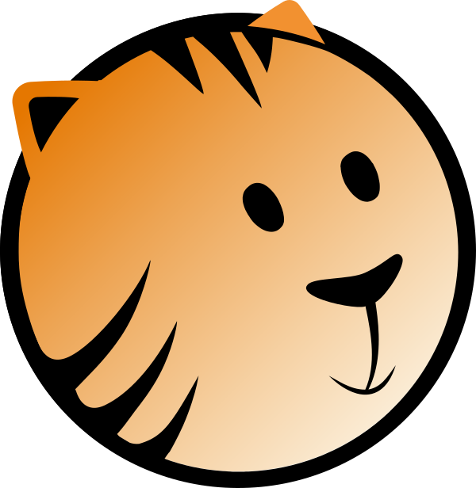

ActiveTiggerActiveTigger is an open-source web tool for collaborative text annotation, built for computational social sciences. Upload a corpus, define your categories, annotate — with the help of active learning, fine-tuned BERT classifiers, and generative AI if you want them.
It is developed by researchers at CSS@IP-Paris (CREST) and used daily for real research projects: stabilising codebooks, building training datasets, and classifying large corpora.
We host an online instance at CREST — researchers can request an account to try it.
ActiveTigger is developed in the CREST research unit (CNRS, Polytechnique, ENSAE) by the CSS@IP-Paris team, with the help of OuestWare. It is a complete rewrite of the original R Shiny app by Julien Boelaert and Étienne Ollion. The name is a pun on the similarity between "Tagger" and "Tigger".
We aim to keep the application lightweight, frugal and open source, and to make computational social science methods accessible to communities beyond programmers. The project is funded by DRARI Île-de-France, Progedo and CREST.
If you use ActiveTigger in your research, please cite the companion article (available in the JADT 2026 proceedings):
Schultz, E., Boelaert, J., Morin, A., Bonutti D'Agostini, E., Claesson, A., Chatelain, A., & Ollion, É. (2026). ActiveTigger: An open source collaborative text annotation software for computational social sciences. In Proceedings of the 18th International Conference on Statistical Analysis of Textual Data (JADT 2026), Palermo, Italy, July 8–10, 2026.